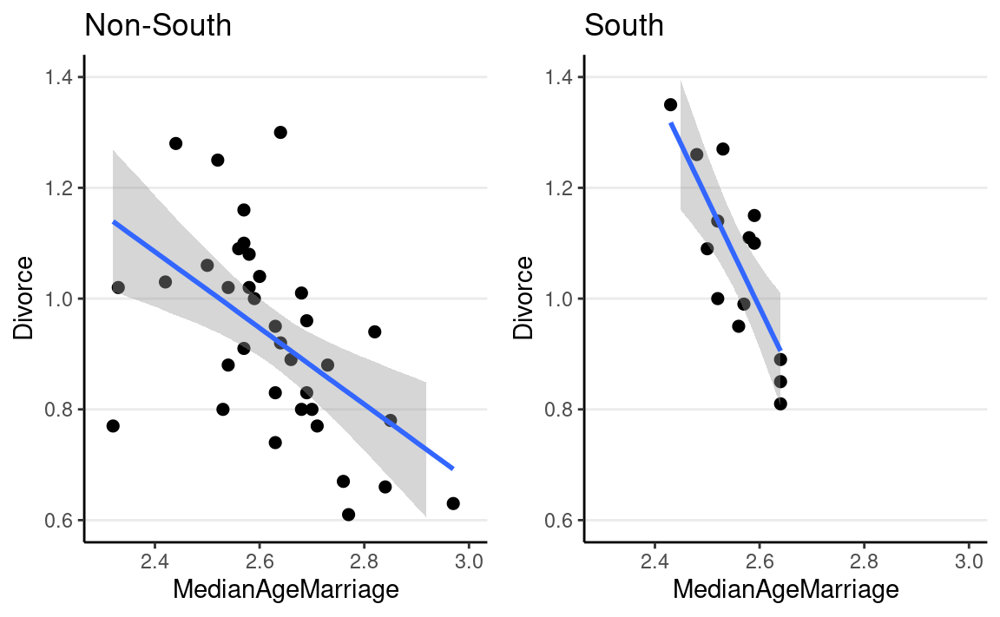

library(tidyverse)
library(here)
library(brms) # simplify fitting Stan GLM models
library(posterior) # for summarizing draws
library(modelsummary) # table for brms
theme_set(theme_classic() +
theme(panel.grid.major.y = element_line(color = "grey92")))
waffle_divorce <- read_delim( # read delimited files
"https://raw.githubusercontent.com/rmcelreath/rethinking/master/data/WaffleDivorce.csv",
delim = ";"
)
# Rescale Marriage and Divorce by dividing by 10
waffle_divorce$Marriage <- waffle_divorce$Marriage / 10
waffle_divorce$Divorce <- waffle_divorce$Divorce / 10
waffle_divorce$MedianAgeMarriage <- waffle_divorce$MedianAgeMarriage / 10
# Recode `South` to a factor variable
waffle_divorce$South <- factor(waffle_divorce$South,
levels = c(0, 1),
labels = c("non-south", "south")
)
# See data description at https://rdrr.io/github/rmcelreath/rethinking/man/WaffleDivorce.html
Different Slopes Across Two Groups
Stratified Analysis
Lets consider whether the association between
MedianAgeMarriage and Divorce differs between
Southern and non-Southern states. Because (and only
because) the groups are independent, we can
fit a linear regression for each subset of states.
ggplot(waffle_divorce,
aes(x = MedianAgeMarriage, y = Divorce, col = South)) +
geom_point() +
geom_smooth() +
labs(x = "Median age marriage (10 years)",
y = "Divorce rate (per 10 adults)") +
ggrepel::geom_text_repel(aes(label = Loc))
m_nonsouth <-
brm(Divorce ~ MedianAgeMarriage,
data = filter(waffle_divorce, South == "non-south"),
prior = prior(normal(0, 2), class = "b") +
prior(normal(0, 10), class = "Intercept") +
prior(student_t(4, 0, 3), class = "sigma"),
seed = 941,
iter = 4000
)
m_south <-
brm(Divorce ~ MedianAgeMarriage,
data = filter(waffle_divorce, South == "south"),
prior = prior(normal(0, 2), class = "b") +
prior(normal(0, 10), class = "Intercept") +
prior(student_t(4, 0, 3), class = "sigma"),
seed = 2157, # use a different seed
iter = 4000
)
msummary(list(South = m_south, `Non-South` = m_nonsouth),
estimate = "{estimate} [{conf.low}, {conf.high}]",
statistic = NULL, fmt = 2,
gof_omit = "^(?!Num)" # only include number of observations
)
| South | Non-South | |
|---|---|---|
| b_Intercept | 6.07 [3.68, 8.42] | 2.74 [1.75, 3.77] |
| b_MedianAgeMarriage | 1.96 [2.88, 1.03] | 0.69 [1.10, 0.33] |
| sigma | 0.11 [0.06, 0.16] | 0.15 [0.12, 0.20] |
| Num.Obs. | 14 | 36 |
We can now ask two questions:
- Is the intercept different across southern and non-southern states?
- Is the slope different across southern and non-southern states?
The correct way to answer the above questions is to obtain the posterior distribution of the difference in the coefficients. Repeat: obtain the posterior distribution of the difference. The incorrect way is to compare whether the CIs overlap.
Here are the posteriors of the differences:
# Extract draws
draws_south <- as_draws_matrix(m_south,
variable = c("b_Intercept", "b_MedianAgeMarriage")
)
draws_nonsouth <- as_draws_matrix(m_nonsouth,
variable = c("b_Intercept", "b_MedianAgeMarriage")
)
# Difference in coefficients
draws_diff <- draws_south - draws_nonsouth
# Rename the columns
colnames(draws_diff) <- paste0("d", colnames(draws_diff))
# Summarize
summarize_draws(draws_diff)
#> # A tibble: 2 10
#> variable mean median sd mad q5 q95 rhat ess_bulk
#> <chr> <dbl> <dbl> <dbl> <dbl> <dbl> <dbl> <dbl> <dbl>
#> 1 db_Intercept 3.31 3.31 1.33 1.30 1.12 5.46 1.00 6223.
#> 2 db_MedianAgeMa -1.26 -1.26 0.519 0.506 -2.10 -0.408 1.00 6225.
#> # with 1 more variable: ess_tail <dbl>As you can see, the southern states have a larger intercept and a lower slope.
p1 <- plot(
conditional_effects(m_nonsouth),
points = TRUE, plot = FALSE
)[[1]] + ggtitle("South") + lims(x = c(2.3, 3), y = c(0.6, 1.4))
p2 <- plot(
conditional_effects(m_south),
points = TRUE, plot = FALSE
)[[1]] + ggtitle("Non-South") + lims(x = c(2.3, 3), y = c(0.6, 1.4))
gridExtra::grid.arrange(p1, p2, ncol = 2)

Interaction Model
An alternative is to include an interaction term
\[ \begin{aligned} D_i & \sim N(\mu_i, \sigma) \\ \mu_i & = \beta_0 + \beta_1 S_i + \beta_2 A_i + \beta_3 S_i \times A_i \\ \beta_0 & \sim N(0, 10) \\ \beta_1 & \sim N(0, 10) \\ \beta_2 & \sim N(0, 1) \\ \beta_3 & \sim N(0, 2) \\ \sigma & \sim t^+_4(0, 3) \end{aligned} \]
- \(\beta_1\): Difference in intercept between southern and non-southern states.
- \(\beta_3\): Difference in the coefficient for A D between southern and non-southern states
In the model, the variable S, southern state, is a dummy variable with 0 = non-southern and 1 = southern. Therefore,
For non-southern states, \(\mu = (\beta_0) + (\beta_2) A\); for southern states, \(\mu = (\beta_0 + \beta_1) + (\beta_2 + \beta_3) A\)
The formula Divorce ~ South * MedianAgeMarriage is the
same as
Divorce ~ South + MedianAgeMarriage + South:MedianAgeMarriage
where : is the symbol in R for a product term.
m1
#> Family: gaussian
#> Links: mu = identity; sigma = identity
#> Formula: Divorce ~ South * MedianAgeMarriage
#> Data: waffle_divorce (Number of observations: 50)
#> Draws: 4 chains, each with iter = 4000; warmup = 2000; thin = 1;
#> total post-warmup draws = 8000
#>
#> Population-Level Effects:
#> Estimate Est.Error l-95% CI u-95% CI
#> Intercept 2.79 0.46 1.87 3.69
#> Southsouth 3.17 1.58 0.09 6.28
#> MedianAgeMarriage -0.71 0.18 -1.05 -0.36
#> Southsouth:MedianAgeMarriage -1.20 0.62 -2.41 0.00
#> Rhat Bulk_ESS Tail_ESS
#> Intercept 1.00 4606 4930
#> Southsouth 1.00 3337 4310
#> MedianAgeMarriage 1.00 4644 4849
#> Southsouth:MedianAgeMarriage 1.00 3345 4384
#>
#> Family Specific Parameters:
#> Estimate Est.Error l-95% CI u-95% CI Rhat Bulk_ESS Tail_ESS
#> sigma 0.14 0.02 0.12 0.18 1.00 4854 5044
#>
#> Draws were sampled using sampling(NUTS). For each parameter, Bulk_ESS
#> and Tail_ESS are effective sample size measures, and Rhat is the potential
#> scale reduction factor on split chains (at convergence, Rhat = 1).Posterior predictive checks
# Check density (normality)
pp_check(m1, type = "dens_overlay_grouped", group = "South")
# Check prediction (a few outliers)
pp_check(m1,
type = "ribbon_grouped", x = "MedianAgeMarriage",
group = "South"
)
# Check errors (no clear pattern)
pp_check(m1,
type = "error_scatter_avg_vs_x", x = "MedianAgeMarriage"
)
Conditional effects/simple slopes
Slope of MedianAgeMarriage when South = 0: \(\beta_1\)
Slope of MedianAgeMarriage when South = 1: \(\beta_1 + \beta_3\)
as_draws(m1) %>%
mutate_variables(
b_nonsouth = b_MedianAgeMarriage,
b_south = b_MedianAgeMarriage + `b_Southsouth:MedianAgeMarriage`
) %>%
posterior::subset_draws(
variable = c("b_nonsouth", "b_south")
) %>%
summarize_draws()
#> # A tibble: 2 10
#> variable mean median sd mad q5 q95 rhat ess_bulk
#> <chr> <dbl> <dbl> <dbl> <dbl> <dbl> <dbl> <dbl> <dbl>
#> 1 b_nonsouth -0.708 -0.710 0.176 0.173 -0.991 -0.414 1.00 4644.
#> 2 b_south -1.91 -1.92 0.595 0.592 -2.89 -0.932 1.00 3705.
#> # with 1 more variable: ess_tail <dbl>plot(
conditional_effects(m1,
effects = "MedianAgeMarriage",
conditions = data.frame(South = c("south", "non-south"),
cond__ = c("South", "Non-South"))
),
points = TRUE
)

Interaction of Continuous Predictors
plotly::plot_ly(waffle_divorce,
x = ~Marriage,
y = ~MedianAgeMarriage,
z = ~Divorce)
\[ \begin{aligned} D_i & \sim N(\mu_i, \sigma) \\ \mu_i & = \beta_0 + \beta_1 M_i + \beta_2 A_i + \beta_3 M_i \times A_i \\ \end{aligned} \]
# Use default priors (just for convenience here)
m2 <- brm(Divorce ~ Marriage * MedianAgeMarriage,
data = waffle_divorce,
seed = 941,
iter = 4000
)
Centering
In the previous model, \(\beta_1\) is the slope of M D when A is 0 (i.e., median marriage age = 0), and \(\beta_2\) is the slope of A D when M is 0 (i.e., marriage rate is 0). These two are not very meaningful. Therefore, it is common to make the zero values more meaningful by doing centering.
Here, I use M - 2 as the predictor, so the zero point means a marriage rate of 2 per 10 adults; I use A - 2.5 as the other predictor, so the zero point means a median marriage rate of 25 years old.
\[\mu_i = \beta_0 + \beta_1 (M_i - 2) + \beta_2 (A_i - 2.5) + \beta_3 (M_i - 2) \times (A_i - 2.5)\]
msummary(list(`No centering` = m2, `centered` = m2c),
estimate = "{estimate} [{conf.low}, {conf.high}]",
statistic = NULL, fmt = 2)
| No centering | centered | |
|---|---|---|
| b_Intercept | 7.43 [2.99, 11.59] | 1.09 [1.02, 1.16] |
| b_Marriage | 1.98 [4.11, 0.07] | |
| b_MedianAgeMarriage | 2.48 [4.08, 0.75] | |
| b_Marriage MedianAgeMarriage | 0.76 [0.06, 1.59] | |
| sigma | 0.15 [0.12, 0.18] | 0.15 [0.12, 0.18] |
| b_IMarriageM2 | 0.08 [0.25, 0.08] | |
| b_IMedianAgeMarriageM2.5 | 0.94 [1.45, 0.46] | |
| b_IMarriageM2 IMedianAgeMarriageM2.5 | 0.75 [0.04, 1.57] | |
| Num.Obs. | 50 | 50 |
| ELPD | 21.4 | 21.5 |
| ELPD s.e. | 6.1 | 6.1 |
| LOOIC | 42.9 | 42.9 |
| LOOIC s.e. | 12.2 | 12.3 |
| WAIC | 43.3 | 43.5 |
| RMSE | 0.48 | 0.48 |
As shown in the table above, while the two models are equivalent in fit and give the same posterior distribution for \(\beta_3\), they differ in \(\beta_0\), \(\beta_1\), and \(\beta_2\).
plot(
conditional_effects(m2c,
effects = "Marriage:MedianAgeMarriage",
int_conditions = list(MedianAgeMarriage = c(2.3, 2.5, 2.7)),
),
points = TRUE
)
Multilevel Model
When data are naturally clustered in three or more segments or clusters, we can model interactions with a technique we have learnedhierarchical model with partial pooling. The difference is that we can have multiple parameters in each cluster. For example, consider the UC Berkeley admission data.
ggplot(berkeley_admit, aes(x = Gender)) +
geom_pointrange(
data = berkeley_admit %>%
group_by(Gender) %>%
summarise(
padmit = sum(Admit) / sum(App),
padmit_se = sqrt(padmit * (1 - padmit) / sum(App))
),
aes(
y = padmit,
ymin = padmit - padmit_se, ymax = padmit + padmit_se
)
) +
labs(y = "Aggregated proportion admitted")
If we consider one department, we can model the number of admitted students for each gender as
\[ \begin{aligned} z_i & \sim \text{Bin}(N, \mu_i) \\ \mathrm{logit}(\mu_i) & = \eta_i \\ \eta_i & = \beta_0 + \beta_1 \text{Gender}_i \end{aligned} \]
So there are two coefficients, \(\beta_0\) and \(\beta_1\). We can then do the same for each of the six departments, and use partial pooling to pool the \(\beta_0\)s into a common normal distribution, and the \(\beta_1\)s into another common normal distribution. We can use \(j\) = 1, 2, \(\ldots\), \(J\) to index department, and then we have the following multilevel model:
\[ \begin{aligned} z_{ij} & \sim \text{Bin}(N_j, \mu_{ij}) \\ \mathrm{logit}(\mu_{ij}) & = \eta_{ij} \\ \eta_{ij} & = \beta_{0j} + \beta_{1j} \text{Gender}_{ij} \end{aligned}, \]
and use a multivariate normal distribution to partially pool the \(\beta_0\) and \(\beta_1\) coefficients. The multivariate normal allows the \(\beta_0\)s and \(\beta_1\)s to be correlated:
\[\begin{bmatrix} \beta_{0j} \\ \beta_{1j} \\ \end{bmatrix} \sim N_2\left( \begin{bmatrix} \gamma_0 \\ \gamma_1 \\ \end{bmatrix}, \mathbf{T} \right)\]
\(N_2(\cdot)\) means a bivariate normal distribution, and \(\mathbf{T}\) is a 2 \(\times\) 2 covariance matrix for \(\beta_0\) and \(\beta_1\). To set priors for \(\mathbf{T}\), we further decompose it into the standard deviations and the correlation matrix:
\[\mathbf{T} = \begin{bmatrix} \tau_0 & 0 \\ 0 & \tau_1 \\ \end{bmatrix} \begin{bmatrix} 1 & \\ \rho_{10} & 1 \\ \end{bmatrix} \begin{bmatrix} \tau_0 & 0 \\ 0 & \tau_1 \\ \end{bmatrix}\]
We can use the same inverse-gamma or half-\(t\) distributions for the \(\tau\)s, as weve done in previous weeks. For \(\rho\), we need to introduce a new distribution: the LKJ distribution.
LKJ Prior
The LKJ Prior is a probability distribution for correlation matrices. A correlation matrix has 1 on all the diagonal elements. For example, a 2 \(\times\) 2 correlation matrix is
\[\begin{bmatrix} 1 & \\ 0.35 & 1 \end{bmatrix}\]
where the correlation is 0.35. Therefore, with two variables, there is one correlation; with three or more variables, the number of correlations will be \(q (q - 1) / 2\), where \(q\) is the number of variables.
For a correlation matrix of a given size, the LKJ prior has one shape parameter, \(\eta\), where \(\eta = 1\) corresponds to a uniform distribution of the correlations such that any correlations are equally likely, \(\eta \geq 1\) favors a matrix closer to an identity matrix so that the correlations are closer to zero, and \(\eta \leq 1\) favors a matrix with larger correlations. For a 2 \(\times\) 2 matrix, the distribution of the correlation, \(\rho\), with different \(\eta\) values are shown in the graph below:
dlkjcorr2 <- function(rho, eta = 1, log = FALSE) {
# Function to compute the LKJ density given a correlation
out <- (eta - 1) * log(1 - rho^2) -
1 / 2 * log(pi) - lgamma(eta) + lgamma(eta + 1 / 2)
if (!log) out <- exp(out)
out
}
ggplot(tibble(rho = c(-1, 1)), aes(x = rho)) +
stat_function(
fun = dlkjcorr2, args = list(eta = 0.1),
aes(col = "0.1"), n = 501
) +
stat_function(
fun = dlkjcorr2, args = list(eta = 0.5),
aes(col = "0.5"), n = 501
) +
stat_function(
fun = dlkjcorr2, args = list(eta = 1),
aes(col = "1"), n = 501
) +
stat_function(
fun = dlkjcorr2, args = list(eta = 2),
aes(col = "2"), n = 501
) +
stat_function(
fun = dlkjcorr2, args = list(eta = 10),
aes(col = "10"), n = 501
) +
stat_function(
fun = dlkjcorr2, args = list(eta = 100),
aes(col = "100"), n = 501
) +
labs(col = expression(eta), x = expression(rho), y = "Density")
As you can see, when \(\eta\) increases, the correlation is more concentrated to zero.
The default in brms is to use \(\eta\) = 1, which is non-informative. If
you have a weak but informative belief that the correlations shouldnt
be very large, using \(\eta\) = 2 is
reasonable.
Adding Cluster Means
In the multilevel modeling tradition, it is common also to include
the cluster means of the within-cluster predictors. In
this example, it means including the proportion of female applicants,
pFemale. So the equation becomes
\[\eta_{ij} = \beta_{0j} + \beta_{1j} \text{Gender}_{ij} + \gamma_2 \text{pFemale}_j,\]
with one additional \(\gamma_2\) coefficient (no \(j\) subscript).
# Obtain mean gender ratio at department level
berkeley_admit <- berkeley_admit %>%
group_by(Dept) %>%
mutate(pFemale = App[2] / sum(App)) %>%
ungroup()
knitr::kable(berkeley_admit)
| Gender | Dept | Admit | App | pFemale |
|---|---|---|---|---|
| Male | A | 512 | 825 | 0.1157556 |
| Female | A | 89 | 108 | 0.1157556 |
| Male | B | 353 | 560 | 0.0427350 |
| Female | B | 17 | 25 | 0.0427350 |
| Male | C | 120 | 325 | 0.6459695 |
| Female | C | 202 | 593 | 0.6459695 |
| Male | D | 138 | 417 | 0.4734848 |
| Female | D | 131 | 375 | 0.4734848 |
| Male | E | 53 | 191 | 0.6729452 |
| Female | E | 94 | 393 | 0.6729452 |
| Male | F | 22 | 373 | 0.4775910 |
| Female | F | 24 | 341 | 0.4775910 |
Fitting the multilevel
model in brms
For this example, Ill use these priors:
\[ \begin{aligned} \gamma_0 & \sim t_4(0, 5) \\ \gamma_1 & \sim t_4(0, 2.5) \\ \gamma_2 & \sim t_4(0, 5) \\ \tau_0 & \sim t^+_4(0, 3) \\ \tau_1 & \sim t^+_4(0, 3) \\ \rho & \sim \mathrm{LKJ}(2) \\ \end{aligned}, \]
m3 <- brm(Admit | trials(App) ~ Gender + pFemale + (Gender | Dept),
data = berkeley_admit,
family = binomial("logit"),
prior = prior(student_t(4, 0, 5), class = "Intercept") +
prior(student_t(4, 0, 2.5), class = "b", coef = "GenderFemale") +
prior(student_t(4, 0, 5), class = "sd") +
prior(lkj(2), class = "cor"),
seed = 1547,
iter = 4000,
# a larger adapt_delta usually needed for MLM
control = list(adapt_delta = .99, max_treedepth = 12)
)
The estimated \(\beta_0\) and \(\beta_1\) for each department is
coef(m3) # department-specific coefficients
#> $Dept
#> , , Intercept
#>
#> Estimate Est.Error Q2.5 Q97.5
#> A 0.8614450 0.4190666 0.01767779 1.717444
#> B 0.6631511 0.1773198 0.30770170 1.019485
#> C 1.3950564 2.3017914 -3.20590679 6.191727
#> D 0.7255582 1.6852709 -2.67776067 4.188871
#> E 1.0278696 2.3939600 -3.77417067 5.999614
#> F -1.2859014 1.6830882 -4.71393343 2.196662
#>
#> , , GenderFemale
#>
#> Estimate Est.Error Q2.5 Q97.5
#> A 0.83484569 0.2713616 0.3216658 1.3817853
#> B 0.24797844 0.3406497 -0.4161967 0.9503618
#> C -0.08692675 0.1376576 -0.3644580 0.1759311
#> D 0.09292745 0.1394797 -0.1762716 0.3640003
#> E -0.12796387 0.1889448 -0.5096155 0.2403602
#> F 0.14643259 0.2750805 -0.4002640 0.6899674
#>
#> , , pFemale
#>
#> Estimate Est.Error Q2.5 Q97.5
#> A -3.032384 3.553513 -10.37552 4.169404
#> B -3.032384 3.553513 -10.37552 4.169404
#> C -3.032384 3.553513 -10.37552 4.169404
#> D -3.032384 3.553513 -10.37552 4.169404
#> E -3.032384 3.553513 -10.37552 4.169404
#> F -3.032384 3.553513 -10.37552 4.169404And a posterior predictive check
pp_check(m3, type = "intervals")
The plot below shows the predicted admission rate:
berkeley_admit %>%
bind_cols(fitted(m3)) %>%
ggplot(aes(x = Dept, y = Admit / App,
col = Gender)) +
geom_errorbar(aes(ymin = `Q2.5` / App, ymax = `Q97.5` / App),
position = position_dodge(0.3), width = 0.2) +
geom_point(position = position_dodge(width = 0.3)) +
labs(y = "Posterior predicted acceptance rate")

Bonus: Growth Model
- Data: Reaction times in a sleep deprivation study
- Predictor: Number of days of sleep deprivation
- Outcome: Daily average reaction time (ms)
- Cluster: 18 individuals (10 observations each)
\[ \begin{aligned} \text{Repeated-measure level:} \\ \text{Reaction10}_{ij} & \sim \mathrm{lognormal}(\mu_{ij}, \sigma) \\ \mu_{ij} & = \beta_{0j} + \beta_{1j} \text{Days}_{ij} \\ \text{Person level:} \\ \begin{bmatrix} \beta_{0j} \\ \beta_{1j} \\ \end{bmatrix} & \sim N_2\left( \begin{bmatrix} \gamma_0 \\ \gamma_1 \\ \end{bmatrix}, \mathbf{T} \right) \\ \mathbf{T} T & = \mathrm{diag}(\boldsymbol{\tau}) \boldsymbol{\Omega} \mathrm{diag}(\boldsymbol{\tau}) \\ \text{Priors:} \\ \gamma_0 & \sim N(0, 2) \\ \gamma_1 & \sim N(0, 1) \\ \tau_0, \tau_1 & \sim t^+_4(0, 2.5) \\ \boldsymbol{\Omega} & \sim \mathrm{LKJ}(2) \\ \sigma & \sim t^+_4(0, 2.5) \end{aligned} \]
m4 <- brm(
Reaction100 ~ Days + (Days | Subject),
data = sleepstudy,
family = lognormal(),
prior = c( # for intercept
prior(normal(0, 2), class = "Intercept"),
# for slope
prior(std_normal(), class = "b"),
# for tau0 and tau1
prior(student_t(4, 0, 2.5), class = "sd"),
# for correlation
prior(lkj(2), class = "cor"),
# for sigma
prior(student_t(4, 0, 2.5), class = "sigma")
),
control = list(adapt_delta = .95),
seed = 2107,
iter = 4000
)
m4
#> Family: lognormal
#> Links: mu = identity; sigma = identity
#> Formula: Reaction100 ~ Days + (Days | Subject)
#> Data: sleepstudy (Number of observations: 180)
#> Draws: 4 chains, each with iter = 4000; warmup = 2000; thin = 1;
#> total post-warmup draws = 8000
#>
#> Group-Level Effects:
#> ~Subject (Number of levels: 18)
#> Estimate Est.Error l-95% CI u-95% CI Rhat
#> sd(Intercept) 0.12 0.03 0.07 0.18 1.00
#> sd(Days) 0.02 0.00 0.01 0.03 1.00
#> cor(Intercept,Days) -0.02 0.26 -0.50 0.48 1.00
#> Bulk_ESS Tail_ESS
#> sd(Intercept) 3915 4616
#> sd(Days) 4067 4401
#> cor(Intercept,Days) 3253 4474
#>
#> Population-Level Effects:
#> Estimate Est.Error l-95% CI u-95% CI Rhat Bulk_ESS Tail_ESS
#> Intercept 0.93 0.03 0.87 0.98 1.00 3903 5079
#> Days 0.03 0.01 0.02 0.04 1.00 3819 4719
#>
#> Family Specific Parameters:
#> Estimate Est.Error l-95% CI u-95% CI Rhat Bulk_ESS Tail_ESS
#> sigma 0.08 0.00 0.07 0.09 1.00 7615 5575
#>
#> Draws were sampled using sampling(NUTS). For each parameter, Bulk_ESS
#> and Tail_ESS are effective sample size measures, and Rhat is the potential
#> scale reduction factor on split chains (at convergence, Rhat = 1).Model estimate: the shaded band is the predicted mean trajectory
sleepstudy %>%
bind_cols(fitted(m4)) %>%
ggplot(aes(x = Days, y = Reaction100)) +
geom_ribbon(aes(y = Estimate, ymin = `Q2.5`,
ymax = `Q97.5`), alpha = 0.3) +
geom_point() +
facet_wrap(~ Subject)
Last updated
#> [1] "April 03, 2022"